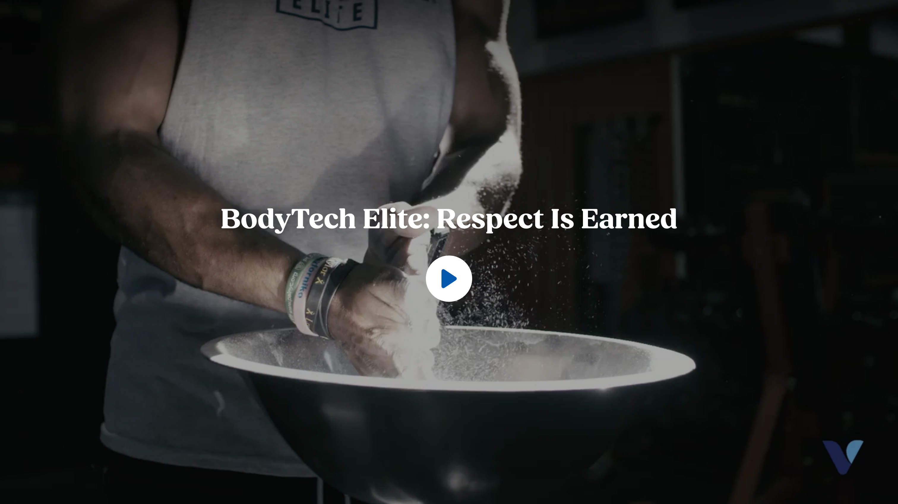

Platter component
Video Banner
Transcribed from Confluence, authored by Sarah Lee, page in the "FSD - Template 2" folder. It is the client's spec, reproduced verbatim in substance. The source table carries five columns — Content Type, Functional Requirement, Character Count, Asset/Copy Requirement, Responsive & Content Behavior — and is reproduced with all five; a - is the page's own empty-cell marker and is kept as written, while a cell the page leaves genuinely blank is blank here too.
Spec: https://getplatter.atlassian.net/wiki/spaces/TVS/pages/940539989/FSD+Video+Banner
02 — Screenshots
How it renders
Wipe the handle across the design to find where the build drifts from it. The Figma frame and the capture are exported at the same width, so anything that moves under the handle is a real difference. Every width is below as a plain capture.



03 — Fields
What a merchandiser fills in
Generated from _schema.ts, in the order Amplience shows them.
| Field | Type | Constraints | Description | |
|---|---|---|---|---|
headingHeading |
string | required | max 70 min 1 |
The headline over the thumbnail, e.g. "BodyTech Elite: Respect Is Earned". Wrap words in _underscores_ for italic and **double asterisks** for bold. Write ~12~ for subscript; a registered mark (®) is raised automatically, and a plain asterisk is never formatting. It is centred in white on the darkened thumbnail and disappears once the video starts. Keep it to one line on desktop, around 35 characters — a second line pushes the play button down over the picture. |
headingLevelHeading level |
string | h1 · h2 · h3default "h2" |
Choose h1 only if this module is the first thing on the page and no other h1 exists. Otherwise leave it as h2 — two h1s on one page hurts SEO. Choose h3 when the module sits underneath a section that already has an h2, so the page's heading order stays unbroken. This changes nothing you can see: the size is set separately below. | |
headingSizeHeading size (desktop / mobile) |
string | 64px / 38px · 56px / 34px · 48px / 30px · 36px / 24px · 28px / 20px · 20px / 16pxdefault "48px / 30px" |
A fixed pair from the TVS type scale — the first size applies from tablet up, the second on phones. 48px / 30px is the design. The video box does not grow with the text, so a larger pair on a long headline runs into the play button; 20px / 16px reads as a caption rather than a title. | |
headingFontHeading font |
string | Lato · corisanderegular · Fieldsdefault "Fields" |
Fields is the serif the design uses and is the default. It is not yet installed on vitaminshoppe.com, so until it is, the heading falls back to Georgia — still a serif, but not the exact drawn face. Pick Lato if you would rather the heading match the rest of the site exactly than approximate the design. | |
videoVideo |
string | required | max 500 min 1 |
Full URL of an .mp4, played in place when the play button is pressed. Landscape 16:9 footage only — the box is 16:9 at every width and a portrait clip is letterboxed with black bars. Three things about the file itself, because getting them wrong is invisible until a shopper presses play and nothing happens: it must be H.264 (a phone or an editor exporting AV1 or HEVC will not play for many iPhone users), it should be saved for web streaming so it starts before it has finished downloading, and it should be kept small — a 30-second clip at 1920x1080 should sit under about 15MB. The clip is not fetched until play is pressed. |
imageThumbnail |
string | required | min 1 | Full URL of the still a shopper sees before pressing play, and the frame that shows while the video loads. Crop it to 16:9 before upload — the design is 1512 × 850 — as it fills the box and is trimmed at other shapes. Pick a frame that represents the clip rather than its literal first frame, which is often a blur. It is darkened by about a third so the white headline reads on it. jpg, jpeg or png. |
imageAltThumbnail alt text |
string | required | min 1 | Describe what the thumbnail shows, e.g. "An athlete chalking their hands over a bowl in a dim gym". Required for accessibility — it is what a screen reader announces in place of the picture, and it also names the video in analytics. Do not write "video of": the play button already says that. |
priorityPrioritise image loading |
boolean | default false |
Switch on when this module is the first thing on the page, so the thumbnail loads immediately instead of lazily. | |
sectionIdSection ID |
string | max 50^[a-z][a-z0-9-]*$ |
A name for this specific module, used for two things. A link anywhere on the site can jump straight to it by ending the URL with # and this name, e.g. #brand-video. Page-level CSS can also target this one module rather than every video banner. Use lowercase letters, numbers and hyphens, start with a letter, and make it unique on the page — two modules sharing an ID will break the jump link. Leave empty if you need neither. |
04 — Sample content
A filled-in example
From _content.json. This is what the screenshots above are rendering.
{
"heading": "BodyTech Elite: Respect Is Earned",
"headingLevel": "h2",
"headingSize": "48px / 30px",
"headingFont": "Fields",
"video": "https://cdn.shopify.com/videos/c/o/v/ec8b2d17dd4349c1854087a29e52101a.mp4",
"image": "../assets/video-banner-poster-16x9-3002.jpg",
"imageAlt": "An athlete in a BodyTech Elite shirt chalking their hands over a steel bowl in a dim gym",
"priority": false,
"sectionId": "brand-video"
}05 — Design reference
Design reference
| View | Frame | Size |
|---|---|---|
| Desktop | Figma 18538:11707 | 1512 × 850.5, 16:9 |
| Mobile | Figma 18538:11708 | 375 × 211, 16:9 |
_figma-desktop.jpg and _figma-mobile.jpg are the two frames exported at 2×. Measurements extracted 2026-08-26; a value the file does not carry is written "not specified".
Composition. One 16:9 box, both views: the poster fills it (image fill, cover) under a solid black scrim at 32% opacity — not a gradient, not bound to a token. An overlay stack sits absolutely over the poster, centred both ways, holding the heading and the play control in a vertical stack; every other layer in the file (reviews badge, labels, preheading, subheading, description, a second text button) is hidden and is not part of the design. The frame background is sections/background-main #FFFFFF, never visible. No breakpoint or mode token is set on either frame.
| Element | Desktop (1512 × 850.5) | Mobile (375 × 211) |
|---|---|---|
| Overlay padding | 48 sides (Container Margin Spacing 2), 32 top/bottom (spacing-large) | 24 sides, 24 top/bottom |
| Section Header | Fill width, max 1440 (Page Width), Hug height, items centred, gap 32 | Fill 327, gap 16 |
| Heading | BodyTech Elite: Respect Is Earned — richtext-md/H1/bold fields: Fields 48 / 700 / 1.2, tracking 0, #FFFFFF, centred, one line (58 tall) | Fields 30 / 700 / 1.2, centred, two lines (72 tall) |
| Heading → play gap | 32 | 16 |
| Play control | icon button variant Size=54px, Mode=Dark, described icon-button-secondary: Hug 78 × 78 (38 glyph + 20 padding), radius 100, fill colors/neutrals/white #FFFFFF at 100%, no border, no shadow | 48 × 48 (24 glyph + 12 padding), same fill |
| Play glyph | 38 × 38 filled path, colors/brand colors/blue #0458AD, a right-pointing triangle with rounded corners, left-weighted in its box | 24 × 24, same path |
| Vertical rhythm | heading + gap + disc = 168, centred: 341.25 above and below | heading 72 + 16 + 48 = 136, centred |
Tokens bound in the file: colors/brand colors/white (heading), colors/neutrals/white (disc), colors/brand colors/blue (glyph), typography/family/primary = Fields, richtext-md/h1 = 48 / 30, spacing-xs 6 / 4, s 16 / 8, m 24 / 16, large 32 / 24, Container Margin Spacing 2 48 / 24, Page Width 1440.
Desktop ↔ mobile diff worth deciding, not measuring: only sizes change — the heading pair (48 / 30, the shared headingSize default), the header gap (32 / 16) and the disc (78 / 48 with a 38 / 24 glyph). The composition, scrim, colours and hidden layers are identical. Nothing in either frame shows the playing state, the heading after play, hover, or focus.
06 — User requirement
User requirement
- User can click the play button to start inline playback with native video controls (play/pause/volume/scrub).
- Video plays inline in the same frame on both desktop and mobile — no lightbox/modal, consistent with the existing product-page video pattern already live on the site.
07 — Admin requirement
Admin requirement
| Content Type | Functional Requirement | Character Count | Asset/Copy Requirement | Responsive & Content Behavior |
|---|---|---|---|---|
| Heading (Required) | Admin edits a CMS-controlled heading shown above the video before playback starts. | 30-70 | - | - |
| Video Asset (Required) | Admin uploads one video per module instance. | 16:9 aspect ratio, enforced on both breakpoints | Same ratio and inline-play behavior on desktop and mobile. | |
| Thumbnail (Required) | Admin uploads a thumbnail image shown before play is triggered. | - | - | |
| Playback Controls | Native player controls (play/pause/volume/scrub); reuses the existing site video component rather than a new player build. | - | - | |
| Module Cap | One video per module instance. | - | - |
08 — Other requirements
Other requirements
- Analytics: Component supports automated impression tracking (viewport entry) and video-view/play tracking via the standard
raiseEventhandler.
09 — Open comments
Open comments
The source page carries no comments. Everything below is an ambiguity in the page's own text, recorded as a question rather than resolved.
Sarah Lee — unanswered 2026-08-26
unanswered 2026-08-26
The Heading row says the heading is "shown above the video before playback starts". In both frames the heading is overlaid on the poster, centred, with the play button beneath it, rather than sitting above the video frame. Which placement is intended — above the frame, or overlaid on the poster? And "before playback starts" reads as though the heading hides once playback begins; please confirm whether it does, or whether it stays in place over the playing video.
Sarah Lee — unanswered 2026-08-26
unanswered 2026-08-26
The Playback Controls row says the module "reuses the existing site video component rather than a new player build", and User requirement 2 points to "the existing product-page video pattern already live on the site". No TVS video component is exposed to us through TVS-Common — docs/tvs-api-reference.md lists no video API — so we cannot reach whatever plays video on the product page. Which component is meant, how would we invoke it, and is a native <video> element with the browser's own controls (play/pause/volume/scrub) acceptable in its place?
Sarah Lee — unanswered 2026-08-26
unanswered 2026-08-26
The Video Asset row says "Admin uploads one video per module instance", and the Thumbnail row says "Admin uploads a thumbnail image". The Amplience content types in this project take URLs, not uploads. Is the video a URL to a hosted mp4, a DAM asset, or a YouTube/Vimeo embed? The answer decides whether native inline playback with native controls is even possible — an embedded player carries its own controls and its own frame.
Sarah Lee — unanswered 2026-08-26
unanswered 2026-08-26
The Thumbnail row asks for an image but names no alt text field. Every image in this project carries one, and the thumbnail is the only thing on screen before play is triggered. Is the alt text a field the admin fills, or should it be derived from the heading?
10 — Deviations
Deviations
Recorded as each was found while building, so the gaps are visible rather than forgotten.
Native <video>, not a TVS player
Built <video controls playsinline preload="none">
No TVS video component is reachable from a Platter section (Open comment 2), so the player is the browser's own, exactly as the UGC Video Slider already ships it: native controls, inline, no pop-up. The clip is not fetched until play is pressed. Mobile Safari honours playsinline, so the frame does not go full-screen by itself.
The heading and play button hide on play and return when the clip ends
Built
The FSD says the heading is "shown … before playback starts" (Open comment 1). Pressing play removes the darkened thumbnail, the heading and the disc together, so the native controls have the whole frame; when the clip ends they come back. A pause mid-clip leaves the player showing — the shopper paused it and expects to resume, not to see the poster again.
Video is a URL field
Built video, a full mp4 URL
The FSD says "Admin uploads"; Amplience content types here take URLs (Open comment 3). The field shares its name and its file guidance with the UGC slider's card video — H.264, saved for web streaming, kept small — retuned for landscape 16:9. An embed URL (YouTube, Vimeo) does not play here; that reading of the row is the client's to confirm.
Thumbnail alt text added
Built imageAlt, required
The FSD's Thumbnail row names no alt text (Open comment 4). Every image in the project carries one, and here it is also the accessible name of the play button ("Play video: …") and the video_title in analytics.
One control, whole-frame hit area
Built
The FSD says "click the play button"; the thumbnail is clickable too, which is what a shopper expects of a poster. Rather than a second invisible button over the frame, the disc's ::after covers the box — one tab stop, one accessible name, the same shape the product card uses for its one link.
A solid white play disc
Built icon-button--solid in components/icon-button.css
The component library's icon-button-secondary — a white disc, no hairline, the glyph in brand blue — had no counterpart in the repo; the existing icon-button is the Expert Module's glass-on-black. Added as a modifier with the same TVS escalation, so the two share one box and one size token. The size is 48px on phones and 78px from md, set on the section root in base.css, where the icon button's own comment says a per-section size belongs.
Analytics — play
Built ItemClick via raiseEvent, plus a GA4 video_play push
The disc fires raiseEvent('ItemClick', { ctaLabel: 'Play video', … }, 'Video Banner') and the <video> element's own play event pushes video_play in the Merkle guide's shape, as the UGC slider does, without modal_name because nothing opens.
Analytics — impression (viewport entry)
Not built
Same position as every section: no impression event name exists in any TVS template, so building one means inventing an event their handler ignores. Needs the name and payload from TVS.
Heading renders in Georgia until Fields is hosted
Not built waiting on the client
Fields is the drawn face and the default; it is not hosted on vitaminshoppe.com (base.css § heading font records the check), so the stack falls to Georgia. Measured 2026-08-26 against the frames: the line box, the leading, the gap to the disc and the vertical centring all match, but the glyphs run about 10% wider (843 vs 767px desktop ink). Everything else on the frame — disc, glyph, scrim, poster alignment — measured identical. It corrects itself the day the font is hosted; nothing in the markup is waiting on it.
Desktop type ramp steps in at 1024px, not 768px
Built heading, gap, disc and glyph flip together at lg
Figma draws 1512 and 375 only. At 768 the box is 432px tall, and the desktop ramp — 48px heading, 32px gap, 78px disc — wraps the design's own 33-character title to two lines with a one-word orphan and fills half the frame. Between 768 and 1023 the section keeps the mobile ramp (30px, 16px, 48px), which holds a 40-character title on one line; the desktop ramp starts at 1024, where a 576px box carries it. The disc token in base.css moves with the markup. Raised by the in-between review 2026-08-26.
Full-bleed 16:9 at 1920 is a 1080px-tall box
Not built left for a design call
The frame is full-bleed and 16:9 is enforced, so at 1920 the box is 1080px tall: taller than a 1080p viewport once browser chrome is counted, a full screen of dimmed poster with one line of text in it. The type and disc still read at that size; the frame is the question. The review's fix is mx-auto max-w-[1440px] on the box — 1440 × 810 at 1920, the Page Width token the file itself carries, and the width every sibling section's content already stops at — which changes nothing at or below 1440. Not applied because the Figma frame is full-bleed at its only drawn width; it needs a yes.
Heading contrast depends on the thumbnail
Built 32% scrim as drawn
The scrim is the design's flat 32% black and reads as intended at every width. Where white type crosses the brightest band of a thumbnail — here the chalk burst — the contrast margin is thin. That is a property of the picture a merchandiser chooses, and the thumbnail description says so.